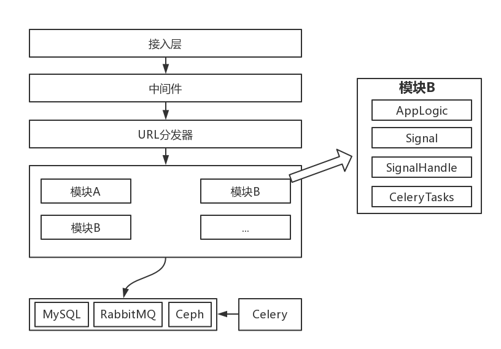
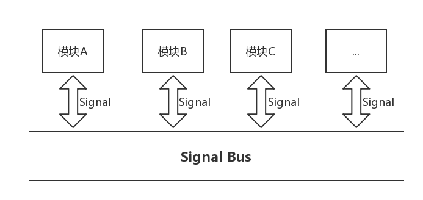

最近负责开发一个自动发现主机信息的应用。应用中数据流向复杂，处理逻辑冗余堆积。项目技术栈选择的是Django + Vuejs。前端使用 Webpack打包，模块化管理，主要是展示数据。后端涉及的模块多、处理规则多、数据表多，每次涉及之前功能修改时，都消耗大量时间进行code review。让我才意识到，在复杂应用中解耦模块非常重要。下面是一些调研和实践。
1. 观察者模式
在实践中，我主要使用的是 Django Signal，实现对模块的解耦。Django Signal 是 Django 对观察者模式的实现和应用。因此，有必要先了解一下观察者模式。
观察者模式是软件设计模式的一种。通常，大家会使用等式：发布 + 订阅 = 观察者模式。来表达对观察者模式的理解。实际上，这个等式并不完全正确。
发布订阅模式与观察者模式区别：
发布订阅模式的通信依赖于消息队列（RabbitMQ、RocketMQ、ActiveMQ、Kafka、ZeroMQ、MetaMq等）属于异步，观察者模式通常是同步的。
发布订阅模式松散耦合，发布者和订阅者甚至所属不同应用；观察者模式所属一个应用。在实现上，观察者模式，需要维护一个订阅列表。当状态发生改变时，自动通知列表中的全部对象。
2. Django Signal
Signal 是 Django 框架中提供的一个信号分发器。发送器发送信号，通知一系列的接收器，从而触发接收器执行一些操作。
需要注意的是，Django 信号是同步的。如果滥用，会影响到 Django 的处理效率。
下面我会以 Django1.8.3为例，从一个使用案例出发，再到源码，介绍 Django 中 Signal 的实现方式。
2.1 简单的例子
这里有一个小需求：在Model表执行save后，触发一些执行逻辑。
- 加载Signal myApp/init.py
1 | # -*- coding: utf-8 -*- |
2.2 从源码理解Django Signal处理逻辑
上面的例子，使用了极少量的代码，就享受到了 Django 提供的信号处理机制所带来的便利。但是，如果仅仅停留在使用，你可能无法对 Django Signal有更深入的了解。下面，从源码来看看 Django Signal 的处理逻辑。
声明信号
Django 内置了大量 Model 相关的信号，可以直接使用。上面例子使用的信号 post_save ，就是 ModelSignal 类的一个实例，而 ModelSignal 又继承自 Signal 类。
1 | django/db/models/signal.py |
注册信号处理函数
Django 提供的 receiver 函数是一个装饰器，被修饰的函数作为参数注册到接收器对象列表。
1 | django/dispatch/__init__.py |
发送信号
在 save 完成之后，Django 会主动发出 post_save 信号；如果是自定义信号，那么需要自行触发。。
1 | django/db/models/base.py |
处理信号，实际上就是依次调用接受器列表中的函数。
1 | django/dispatch/dispatcher.py |
3. 信号解耦、异步任务
在学习了观察者模式，了解 Django Signal 之后，就基本掌握了 Django 模块解耦的基础知识。接着，需要进一步明确模块之间的耦合机制，制定项目约定，就可以利落地实践了。
梳理一下请求的处理链路：

请求经过接入层、中间件处理之后，由 URL 分发器匹配到合适的处理模块，最终某个模块负责返回响应。各个模块连接数据库、消息队列、对象存储保存状态。
每个模块包含四部分：
- AppLogic，模块的应用逻辑
- Signal，模块内置的信号
- SignalHandle，模块关注的信号处理句柄
- CeleryTasks，模块的异步任务
模块与模块之前完全通过信号耦合：

由于 Django Signal 是同步处理机制，为了支持异步处理，可以结合 Celery 和 RabbitMQ 进行实践。
下面是一个信号处理异步逻辑的例子：
1 | myApp/tasks.py |